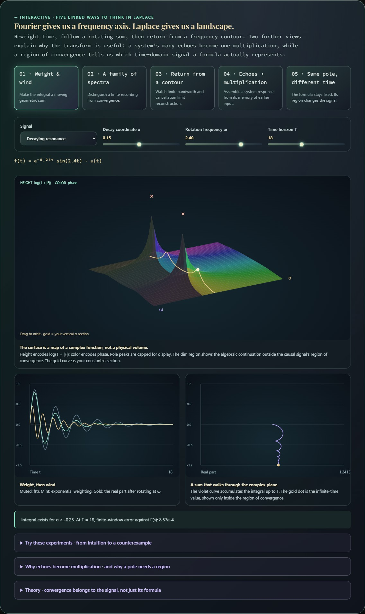
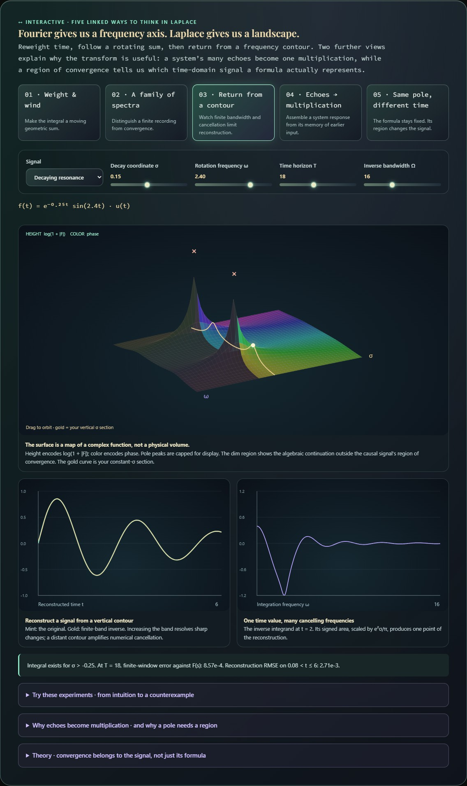
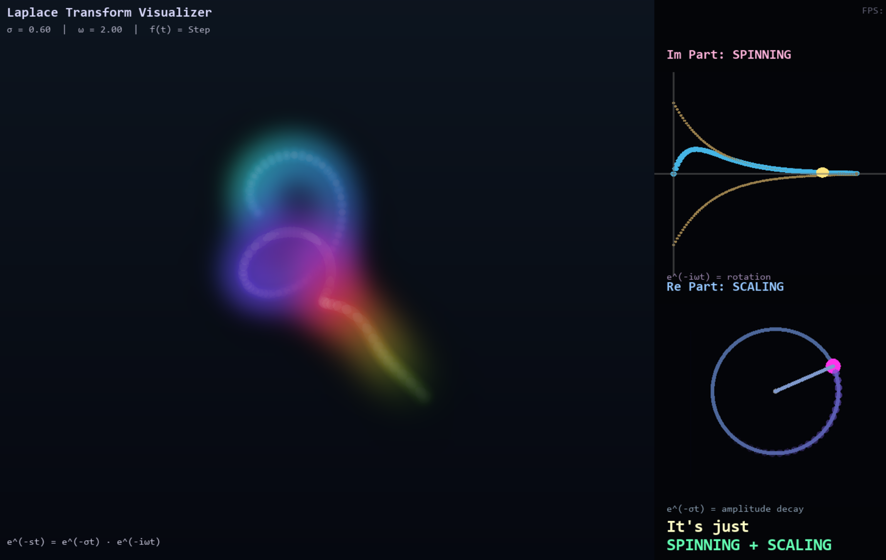
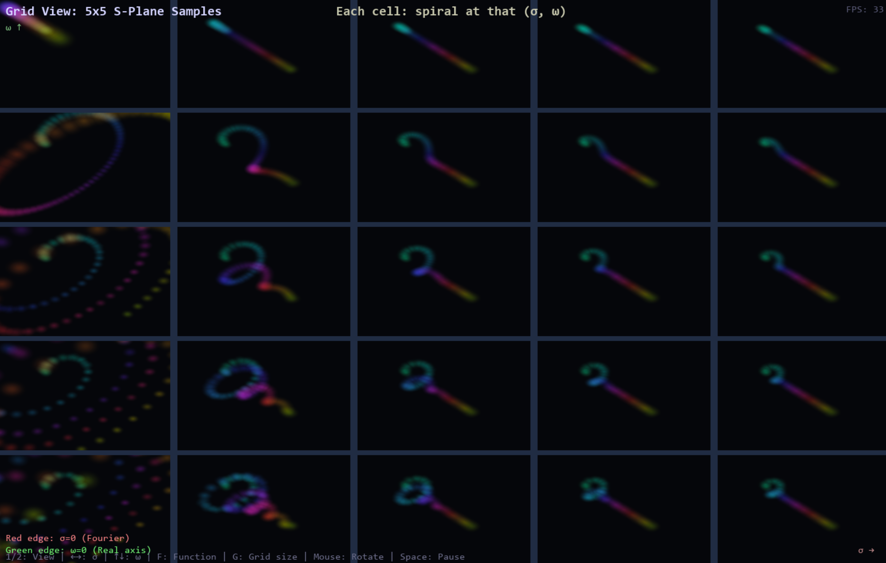
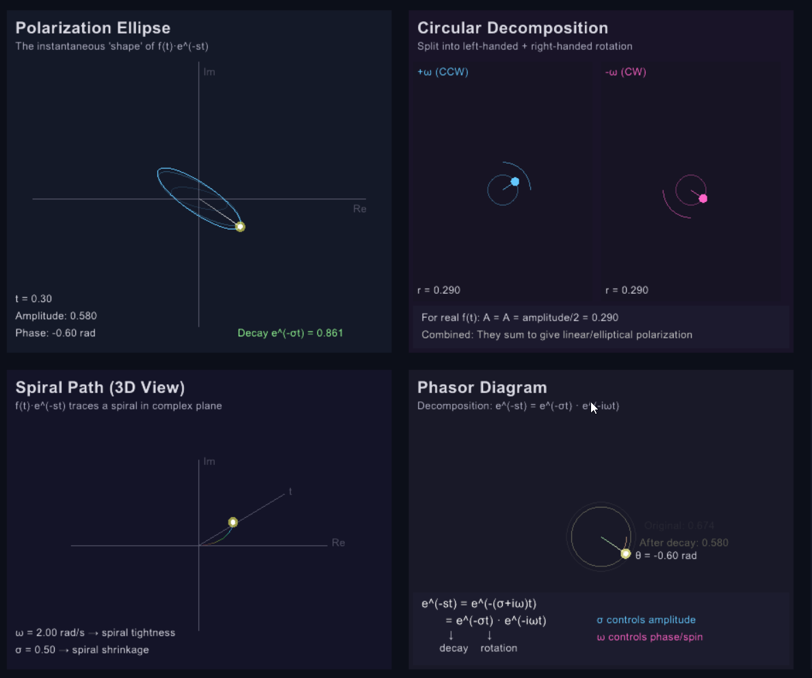
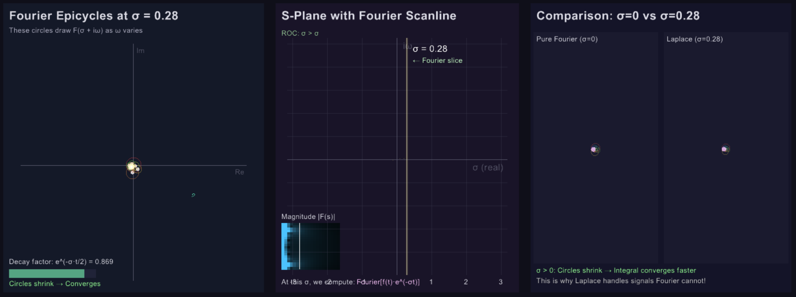

The complex-frequency observatory
One signal. A landscape of Fourier spectra.
Fourier is one slice. What happens when we move it?
Exponential weighting makes late events quieter or louder. Take the Fourier transform of that reweighted signal, and each choice of decay coordinate σ becomes another vertical slice of the Laplace landscape.
Try it: drag the gold slice, compare the weighted signal with its spectrum, then select Fourier section · σ = 0. Choose the growing signal to see why a finite recording can have a spectrum even when the infinite-time Fourier integral does not converge.
F(σ + iω) = ∫₀^∞ [e^(−σt) f(t)] e^(−iωt) dt01 · Main exploration · convolution
Echo studio
The main piece: every input sample leaves a fading echo, and the ribbons add up to the system’s response. Choose a signal, orbit the scene, or inspect one echo’s Fourier response.
Preparing the linked experiments.
Why ribbons become multiplication
Each ribbon is a delayed impulse response weighted by f(τ)Δτ. Density changes Δτ and the number of quadrature samples; the exact output curve does not change. In Fourier inspection, the full echo transforms to f(τ)Δτ e⁻ⁱωτ/(λ+iω), including its tail beyond the displayed eight seconds.
Two-axis orbit responds to both horizontal and vertical dragging. Turntable locks elevation. Drag right to turn the near side right.
02 · Geometric companion · kernel geometry
Memory sculpture
A geometric companion to Echo studio: lift a complex winding into time. Choose a kernel with ringing, beating or a soft onset; frequency changes its turns and decay shapes its envelope. The GPU samples the glowing field along each viewing ray.
Preparing the linked experiments.
A winding is not its accumulated sum
The sculpture lifts h(t)e⁻ⁱωt into three dimensions with time as height. The adjacent complex-plane walk accumulates this kernel instead. Tube thickness and glow are display parameters. Higher ray quality reduces quadrature bands; this is an analytic signal visualization, not a physical participating medium.
03 · Three linked studies · classical foundations
Fourier gives us a frequency axis. Laplace gives us a landscape.
Three established ideas, connected by one selected function: weight and wind a signal, move a Fourier slice, then reconstruct from a contour. The draggable s-plane carries the original six-panel notebook’s coordinated interaction into these views.
Preparing the linked experiments.
Try these experiments · from intuition to a counterexample
- Choose the growing exponential and set σ = 0. The ordinary Fourier integral fails to converge. Raise σ above 0.30: exponential weighting makes an integrable signal.
- With the decaying resonance, bring σ towards −0.25 and ω towards ±2.4. The sum takes longer to settle as you approach a pole. Increase T and compare the numerical integral to the gold analytic value.
- Choose the delayed resonance. Its magnitude along a constant-σ section changes only by e⁻¹·²σ, while the phase winds faster. The delay lives in phase, not just the height of the surface.
- Open the contour experiment. Increase bandwidth to recover the delayed onset, then move σ too far right: the exponential prefactor magnifies finite-band errors. Move it outside the ROC and the reconstruction has the wrong meaning altogether.
Theory · convergence belongs to the signal, not just its formula
f(t) = eᶜᵗ/π · ∫₀∞ Re[F(c + iω)eⁱωᵗ] dω
These examples are causal, so the one-sided integral agrees with the bilateral transform of their zero extension to t < 0. The inverse contour must lie inside the region of convergence. A rational expression can remain finite elsewhere without representing the defining integral there; the ROC distinguishes different possible time-domain signals.
The browser evaluates the forward integral by trapezoidal quadrature and the inverse by a finite frequency integral. Neither is an exact inverse solver. At a jump, the limiting Fourier inversion gives the midpoint of the two one-sided limits. More bandwidth resolves shorter features but cannot remove all truncation or floating-point error.
The 3D display uses a sampled mesh with logarithmic height; it is an explanatory visualization, not a volumetric simulation. It redraws only when controls or the camera change and suspends outside the viewport.
04 · Bilateral signals
Same poles. Different time.
Choose an exponential, repeated pole or oscillating pair. Keep the rational formula fixed while switching the supported half of time.
Preparing the linked experiments.
The region is part of the transform
For the exponential and double-pole families, the pole is at p. The cosine and sine families have poles at p ± iβ. All poles share real part p, so the two regions are σ > p for right-sided signals and σ < p for left-sided signals. The left-sided signal is the negative of the displayed analytic time expression, restricted to t ≤ 0. Both sides produce the same rational formula in their respective regions.
Absolute integrability, not merely boundedness, determines BIBO stability. An anti-causal stable response depends on future input; it is not a real-time causal system.
Current browser interface · recorded views
Saved views of the live observatory above. The desktop notebook below documents the earlier implementation.


Earlier desktop prototype. The original Ruby notebook explored several visual mappings. The later browser version uses linked views and direct manipulation to make the relationships easier to inspect. The recording below preserves that earlier stage; it is not a recording of the current web instrument.
📹 Video · the original six-panel experiment
The Six-Panel Layout
This layout presents the Laplace transform through coordinated views, each revealing a different aspect of the computation:
- Panel 1a (s-plane): Click and drag to adjust σ + iω—this is your "control surface" for exploring the transform
- Panel 1b (f(t)): The original time-domain function before transformation
- Panel 2a (Re/Im components): Real and imaginary parts of the integrand f(t)·e^(-st)—watch how changing s affects oscillation and decay
- Panel 2b (Complex path): The trajectory traced by the integrand in the complex plane as t increases
- Panel 3 (Riemann sum): The accumulating integral F(s)—rectangles sum to give the final transform value
The power is in the coordination: adjusting s in one panel immediately updates all others, revealing how the abstract integral formula manifests geometrically.
Global Operator View

Single s-value: detailed integrand view

Grid view: transform evaluated across s-plane
The visualizer supports both detailed single-point analysis and a global view that evaluates the transform across a grid of s-values, revealing how oscillation, decay, and amplification interact across the complex plane.
Side study · polarization interpretation
Two rotations. A ribbon through time.
Two circles can add up to a straight line. Balance the counter-rotating vectors, watch their sum change shape, then lift its history into three dimensions. Switch to the actual Laplace integrand to see where the analogy ends.
The useful connection—and its limit
With the envelope frozen, equal-frequency counter-rotating circles of unequal weight trace an ellipse. Equal weights cancel one component and leave a line; a single component traces a circle. With σ ≠ 0 the envelope changes, so the full history is no longer a closed ellipse. The gray cross-section freezes the amplitude at the selected time.
The Laplace integrand for a real signal is a single complex spinner, z(t) = f(t)e⁻σᵗe⁻ⁱωᵗ. Its real projection can be written as an equal counter-rotating pair. That pair reproduces Re z, not the complete complex z. A changing real signal does not automatically create elliptical polarization.
This is a geometric analogy, not an electromagnetic simulation. The analyzer plot shows signed amplitude rather than measured optical intensity. All panels share the same sampled trajectory; the third coordinate records time. Reference: Feynman, Polarization ↗
Earlier prototype · recorded polarization display

The desktop prototype explored spinning and decaying vectors. The live study above separates the circular-component analogy from the actual Laplace integrand and exposes the time sweep directly.
Fourier Scanline Interpretation
One way to build intuition: the Fourier transform evaluates
F(iω) = ∫f(t)e^(-iωt)dt—it samples along the imaginary axis of the s-plane.
The Laplace transform generalizes this to the entire complex plane.
Each vertical line s = σ + iω (fixed σ, varying ω in the usual s-plane axes) is like a "Fourier scanline"
with an exponential envelope e^(-σt) applied first.

Visualizing the Laplace transform as Fourier analysis performed after exponential windowing. Different σ values reveal different aspects of the signal's structure.
The Idea
This perspective clarifies why the region of convergence matters:
the integral only converges for σ values where e^(-σt) decays faster than
f(t) grows. The Fourier transform (σ = 0) only works for bounded signals;
Laplace extends to exponentially growing signals by "damping" them first.
# Fourier: only works if f(t) is bounded
F(iω) = ∫ f(t) · e^(-iωt) dt
# Laplace: works for exponentially growing f(t) if σ > growth rate
F(σ + iω) = ∫ f(t) · e^(-σt) · e^(-iωt) dt
= ∫ [f(t)·e^(-σt)] · e^(-iωt) dt ← Fourier of damped signalFuture Directions
Planned Extensions
- Beyond the current contour experiment: adaptive inversion and explicit numerical conditioning
- Pole-zero dynamics: move arbitrary poles and zeros, beyond the current analytic signal family
- Transfer function view: Input → system → output with Laplace
- Z-transform bridge: Connecting continuous and discrete domains